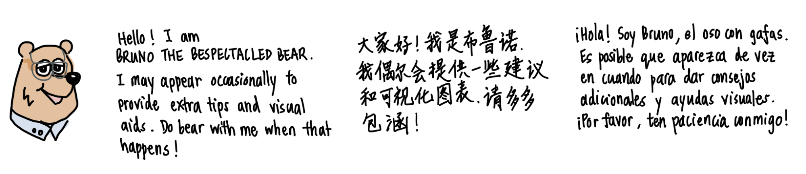

This is the homepage of flintyR, the R version of the software flinty (Flexible and Interpretable Non-parametric Tests of Exchangeability). The Python version is available here.
Bruno is named after a famous statistican who studied exchangeability. Who might that be?
What does this package offer?
flintyR provides exact tests of exchangeability in multivariate datasets.
- It is non-parametric, i.e., makes no distributional assumptions of the features. This allows our methods to work in settings where the user might prefer not to make distributional assumptions about their data.
- It is flexible on multiple fronts. The practitioner can specify feature dependencies based on their knowledge of the problem. (Our tests handle dependent features, should the dependencies satisfy partitionability.) The practitioner can also supply pairwise distance matrices across independent features if the original sample-by-feature matrix is not available.
- It is scalable, so the user does not have to worry about the sample size N or the number of features P of the data.
- It is robust, meaning that it controls for false positive rate (FPR) and remains powerful in realistic settings including uneven representation of subpopulations, sparsity of discriminative features, and small sample sizes.
Here is a schema of how flintyR works.
Installation
Using CRAN
install.packages("flintyR")If prompted to compile C/C++/Fortran, enter “Yes” to attempt to install these from sources.
Using Tarball
- Download the tar ball for flintyR from here.
- Run the following line, changing
FILE_PATH_TO_TAR_BALL.
devtools::install.packages("FILE_PATH_TO_TAR_BALL",
repos = NULL, type = "source")
# Example: devtools::install.packages("/Users/alanaw/Documents/flintyR_0.0.1.tar.gz", repos = NULL, type = "source")Example Usage
The code below demonstrates running our test on a binary matrix.
# library(flintyR)
X <- matrix(nrow = 5, ncol = 10, rbinom(50, 1, 0.5))
getPValue(X) # perform exact test with 5000 permutations
# Output should be larger than 0.05Examples involving real datasets can be found in the tutorials.
Tutorials
We offer several tutorials on using our software.
- Conceptual explorations of exchangeability (see Exchangeability and Homogeneity)
- Application to avoiding risking double dipping (see Introduction)
- Application to single cell genomics
- Application to World Values Survey
We love to see our methods and software used across multiple fields, so please reach out to us if you are interested in using them! If there is enough interest, we are happy to include more tutorials.